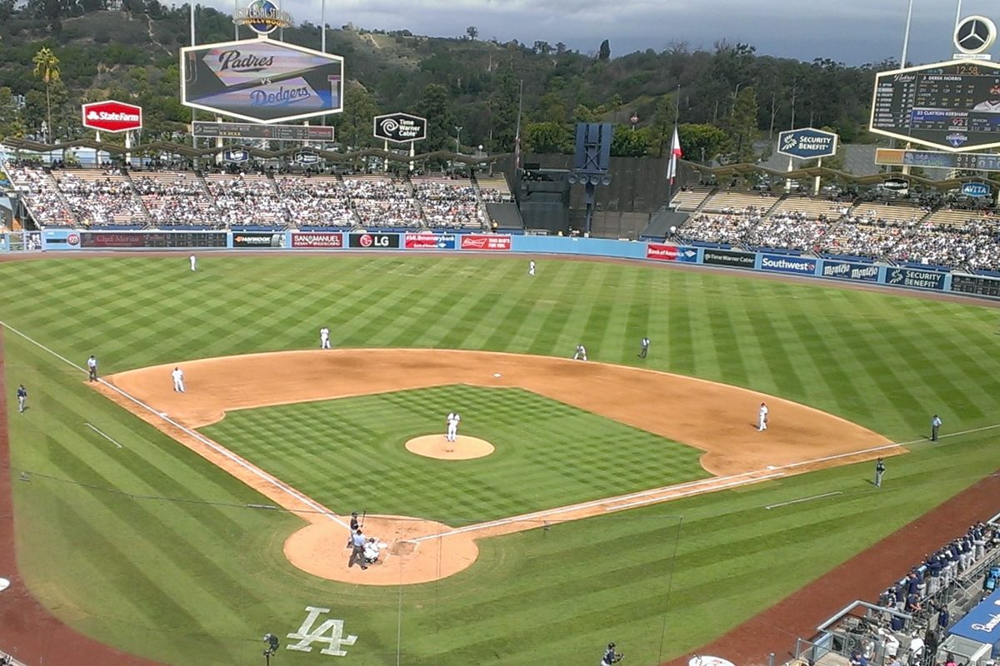

ब्रूअर्स ने डॉजर्स को गेम 4 में 6-4 से हराकर पूरी जीत दर्ज की, 1982 के बाद पहली वर्ल्ड सीरीज़
मिलवॉकी ने गुरुवार रात डॉजर स्टेडियम में 4-0 से पीछे रहने के बाद वापसी की, लॉस एंजिल्स को 6-4 से हराया, नेशनल लीग चैंपियनशिप सीरीज़ में 4-0 की पूरी जीत दर्ज की और 1982 के बाद पहली वर्ल्ड सीरीज़ में पहुंचा।

मुख्य बिंदु
- अपडेट 02:40 UTC। वर्ल्ड सीरीज़ का कार्यक्रम तय हो गया है। मेजर लीग बेसबॉल ने शुक्रवार को घोषणा की कि गेम 1 शुक्रवार, 23 अक्टूबर को मिलवॉकी के अमेरिकन फ़ैमिली फ़ील्ड में खेला जाएगा, और हर मैच…
- लॉस एंजिल्स। मिलवॉकी ब्रूअर्स 1982 के बाद पहली बार वर्ल्ड सीरीज़ में पहुंचे हैं। मिलवॉकी ने गुरुवार रात डॉजर स्टेडियम में गेम 4 में लॉस एंजिल्स डॉजर्स को 6-4 से हराया और नेशनल लीग चैंपियनशिप…
- दो पारियों के बाद जीत मुश्किल लग रही थी। लॉस एंजिल्स ने दूसरी पारी में चार रन बनाए, जिनमें शोहेई ओहतानी का तीन रन का होम रन भी शामिल था। घरेलू दर्शक जोश में थे, डॉजर्स 4-0 से आगे थे, और मिलवॉकी के…
अपडेट 02:40 UTC। वर्ल्ड सीरीज़ का कार्यक्रम तय हो गया है। मेजर लीग बेसबॉल ने शुक्रवार को घोषणा की कि गेम 1 शुक्रवार, 23 अक्टूबर को मिलवॉकी के अमेरिकन फ़ैमिली फ़ील्ड में खेला जाएगा, और हर मैच पूर्वी समय रात 8 बजे Fox पर शुरू होगा। गेम 1 और 2 मिलवॉकी में, गेम 3 से 5 अमेरिकन लीग चैंपियन के घर, और गेम 6 और 7, अगर ज़रूरी हों, मिलवॉकी लौटेंगे, गेम 7 शनिवार, 31 अक्टूबर को होगा। मिलवॉकी अब भी AL विजेता का इंतज़ार कर रहा है: क्लीवलैंड टैम्पा बे से 2-1 से आगे है, गेम 4 बारिश से टलने के बाद शनिवार, 17 अक्टूबर को क्लीवलैंड में होगा। पूरा कार्यक्रम गाइड द ऑर्बिट पोस्ट पर है।
लॉस एंजिल्स। मिलवॉकी ब्रूअर्स 1982 के बाद पहली बार वर्ल्ड सीरीज़ में पहुंचे हैं। मिलवॉकी ने गुरुवार रात डॉजर स्टेडियम में गेम 4 में लॉस एंजिल्स डॉजर्स को 6-4 से हराया और नेशनल लीग चैंपियनशिप सीरीज़ में 4-0 की पूरी जीत दर्ज की।
दो पारियों के बाद जीत मुश्किल लग रही थी। लॉस एंजिल्स ने दूसरी पारी में चार रन बनाए, जिनमें शोहेई ओहतानी का तीन रन का होम रन भी शामिल था। घरेलू दर्शक जोश में थे, डॉजर्स 4-0 से आगे थे, और मिलवॉकी के रात के पांच हिट अभी आने बाकी थे।
वापसी
मिलवॉकी ने चौथी पारी में जवाब देना शुरू किया। जेक बाउअर्स ने दाईं ओर ग्राउंड रूल डबल मारा और ब्राइस तुरांग और विलियम कोंट्रेरास ने रन बनाए। बढ़त 4-2 रह गई।
ब्रूअर्स ने पांचवीं पारी में मैच बराबर कर दिया। डेविड हैमिल्टन ने सेंटर में सिंगल मारा और साल फ्रेलिक ने रन बनाया। बाउअर्स को वॉक मिलने के बाद हैमिल्टन ने खुद भी रन बनाया और मैच 4-4 से बराबर हो गया। दो पारियों में चार रन की कमी बराबरी में बदल गई थी।
गैरेट मिशेल ने छठी पारी में मिलवॉकी को आगे कर दिया। उन्होंने टैनर स्कॉट के खिलाफ सेंटर में अकेला होम रन मारा। यह ब्रूअर्स का लगातार पांचवां रन था और यही रन मैच का फैसला करने वाला बना। मिलवॉकी के बुलपेन ने बाकी समय लॉस एंजिल्स को रन नहीं बनाने दिया।
हैमिल्टन ने नौवीं पारी में एक और रन जोड़ा, दाएं सेंटर में अकेला होम रन मारकर स्कोर 6-4 कर दिया। लॉस एंजिल्स पारी के निचले हिस्से में जवाब नहीं दे सका और पूरी जीत दर्ज हो गई।
तीसरी लगातार जीत की कोशिश खत्म
लॉस एंजिल्स पिछले दो वर्ल्ड सीरीज़ जीतकर लगातार तीसरे खिताब की तलाश में इस सीरीज़ में आया था। कोई भी नेशनल लीग क्लब लगातार तीन बार नहीं जीता है। यह सफर चार मैचों में, घर पर ही, खत्म हो गया। इस सीरीज़ में मिलवॉकी ने 2-1, 7-4, 6-2 और 6-4 से जीत दर्ज की।
मिलवॉकी ने इसके लिए 44 साल इंतजार किया है। ब्रूअर्स इससे पहले सिर्फ एक बार वर्ल्ड सीरीज़ में पहुंचे थे, 1982 में, जब वे अमेरिकन लीग टीम के रूप में सेंट लुइस कार्डिनल्स से सात मैचों में हारे थे। यह क्लब का पहला नेशनल लीग खिताब है।
अब आगे क्या
मिलवॉकी अब अमेरिकन लीग के विजेता का इंतजार करेगा। गेम 3 के बाद क्लीवलैंड गार्डियंस अमेरिकन लीग चैंपियनशिप सीरीज़ में टैम्पा बे रेज़ से 2-1 से आगे हैं, और वही सीरीज़ तय करेगी कि ब्रूअर्स से कौन भिड़ेगा।
वर्ल्ड सीरीज़ शुक्रवार, 23 अक्टूबर, 2026 से शुरू होगी। मिलवॉकी के पास अपने पिचरों को आराम देने, क्रम तय करने और 1982 से इंतजार कर रहे शहर को तैयार होने का पूरा एक हफ्ता होगा।
स्रोत
FOX6 Milwaukee, Sportsnet और FOX Los Angeles ने 15 अक्टूबर, 2026 को गेम 4 के नतीजे की खबर दी।
टाइमलाइन
- Oct 14, 2026मिलवॉकी ने डॉजर स्टेडियम में गेम 3 में लॉस एंजिल्स को 6-2 से हराया और नेशनल लीग चैंपियनशिप सीरीज़ में 3-0 की बढ़त ली।
- Oct 15, 2026लॉस एंजिल्स ने गेम 4 की दूसरी पारी में चार रन बनाए, जिनमें शोहेई ओहतानी का तीन रन का होम रन भी था, और 4-0 से आगे हो गया।
- Oct 15, 2026मिलवॉकी ने पांचवीं पारी में मैच 4-4 से बराबर किया, फिर छठी पारी में गैरेट मिशेल के होम रन और नौवीं पारी में डेविड हैमिल्टन के होम रन से बढ़त ली।
- Oct 15, 2026मिलवॉकी ने लॉस एंजिल्स को 6-4 से हराया, चैंपियनशिप सीरीज़ में 4-0 की पूरी जीत दर्ज की और 1982 के बाद पहली बार वर्ल्ड सीरीज़ में पहुंचा। वर्ल्ड सीरीज़ 23 अक्टूबर, 2026 से शुरू होगी।
- Oct 16, 2026मेजर लीग बेसबॉल ने वर्ल्ड सीरीज़ के समय तय किए: गेम 1 23 अक्टूबर को मिलवॉकी में, हर मैच पूर्वी समय रात 8 बजे Fox पर, और ज़रूरत पड़ने पर गेम 7 31 अक्टूबर को।